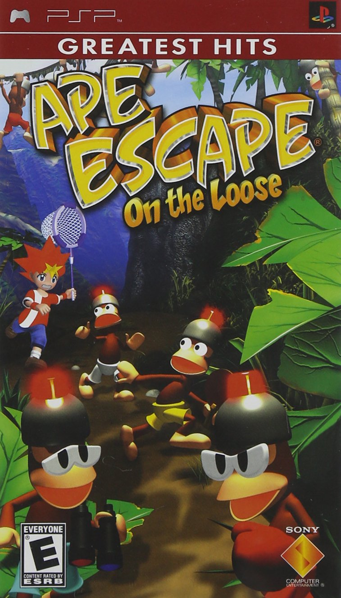
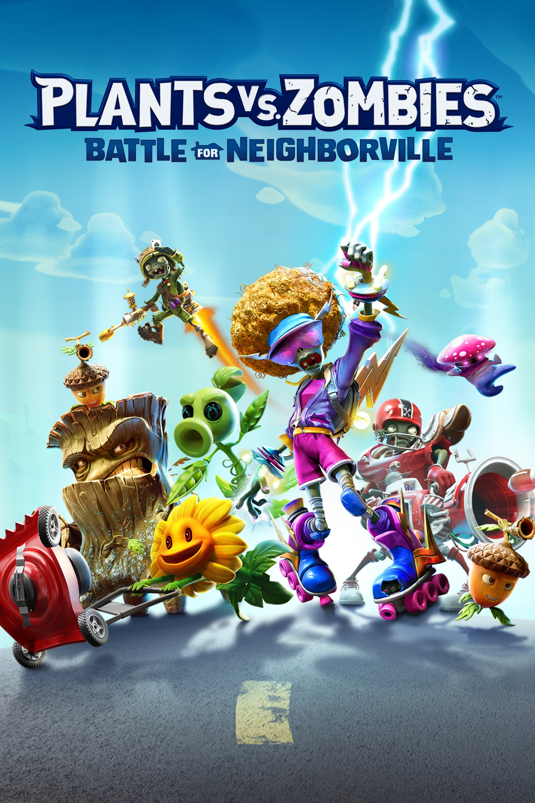

Ape Escape On the Loose:
Um remake do jogo original, com um controle melhorado e graficos lindos esse jogo é ectremamente divertido de zerar 100%!
Porcentagem de recomendação:
80%
Wario Land Shake it!:
Certamente um dos jogos mais bem animados do wario já teve! mas apesar disso ele possui um sistema de colecionaeis muito lento.
Porcentagem de recomendação:
65%
God of war (2018):
Um dos, se não O melhor jogo de o Sr. Kratos já teve, mundo aberto com colecionaveis onde voce se sente como um deus da guerra

Porcentagem de recomendação:
90%
PvZ battle for neighborville:
Certamente uma decepsão em todos os sentidos, para conseguir 100%, voce precisa de muito tempo livre e sem nenhum jogo para zerar.
Porcentagem de recomendação: